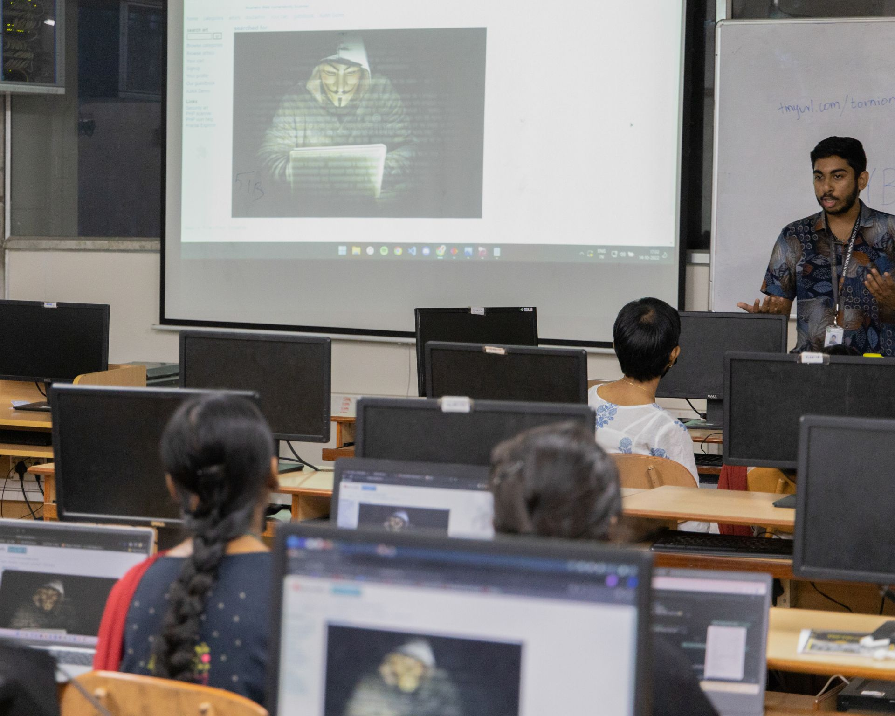
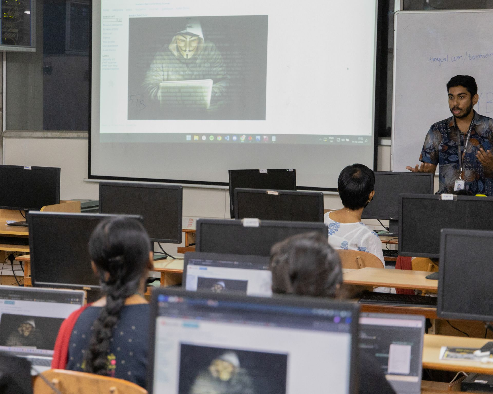

cybersecurity & ml researcher
aspiring ph.d. student · cybersec & ai systems
cybersecurityneural netsred teamllms
contact: aaditya.r@ieee.org · aaditya.r@nyu.edu
about me
hi! i'm aaditya rengarajan — cybersecurity/ai researcher & engineer and incoming ms cybersecurity grad at nyu. my work sits at the crossroads of offensive security, agentic ai, and automation-first systems design.
over the past few years, i’ve contributed to a mix of gov-grade threat intelligence platforms, large-scale system automation tools, and privacy-preserving ml pipelines. alongside that, i’ve led cybersecurity education initiatives training over 500+ learners in real-world offensive security and python for cyber ops.
- (6m) intel corporation – worked on automating operations research tasks within intel foundry using ml and deep rl; also designed an agentic ai framework architecture for internal workflows
- (2m) indian space research organization – modeled a new cyber threat intelligence framework using stix/taxii protocols and visualized ioc-based threats using graph analytics
- (3y) tactical cyberange simulations – developed a modular, extensible framework that aggregates and orchestrates offensive security tools for red-teamers; focused heavily on system design and architecture
- (1m+) equate petrochemical company – built a phishing trace-back tool and org-wide recon dashboard including dns mapping, device exposure tracking, and employee breach visibility
- (6m) information sharing and analysis center (isac) – built dark web monitoring systems and base IT systems

 

 mr. harsh shah – founder, readmenow
mr. harsh shah – founder, readmenow